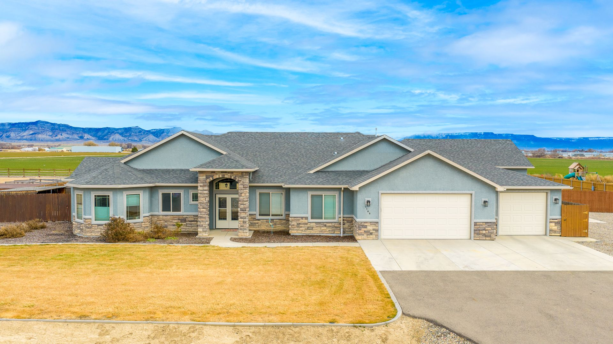

Seller's Guide
Selling a home in Grand Junction
Dave's process from the first walk-through to the closing table: what to fix, the price, the marketing and every deadline.
How Dave sells a house
A plan for the house before buyers see it
Selling a home in Grand Junction with Dave does not start with a sign in the yard. It starts with a walk-through, honest advice on what is worth fixing, and a plan for preparing, pricing and presenting the house.
Then The Kimbrough Team's own marketing and listing staff produce the photography, drone, video and virtual tour and run the email and social campaigns, while Dave handles the strategy, the negotiation and the contract. He keeps you posted at each stage, so the deadlines bring no surprises.

Step 1 of 8
Walk the house with Dave
Dave walks through the house with you before anything else. He says plainly which repairs should pay for themselves in the price, which ones will not, and where a little money changes what you walk away with.

Step 2 of 8
Get the house ready
Next comes the work list: the repairs worth making, the cleaning and the clearing out. If the house needs a contractor, Dave can recommend people who do the work.

Step 3 of 8
Set the price
Dave prices the house against the homes that have actually sold around it, not against a hopeful number. The price and the plan for presenting the house are set together, so it goes on the market ready for the buyers most likely to pay.

Step 4 of 8
Photography, drone, video and a virtual tour
The team's marketing staff shoot the house the way buyers will first see it: professional photos, drone views of the lot and its setting, video and a virtual tour, all ready before the listing goes live.

Step 5 of 8
Take it to market
The listing goes on the MLS with that media, and the team runs targeted email and social campaigns to put it in front of buyers. Dedicated listing staff keep the showings and the paperwork moving, so a question gets an answer from someone who knows your file.

Step 6 of 8
Weigh the offers
When offers come in, Dave compares more than the price: the loan, the earnest money, the contingencies and the dates in each one. He settles the terms with you, then writes the counterproposal on the Commission-approved form and negotiates it.

Step 7 of 8
Inspection and appraisal
The buyer's inspection and appraisal come next, each with its own deadline in the contract. If the buyer objects to something, Dave negotiates the resolution with you, and if the appraisal comes in under the price, he lays out the options before the deadline passes.

Step 8 of 8
Close the sale
Title, the buyer's loan and the final walk-through all run to the closing date. Dave and the team track each deadline and tell you what comes next, so you know what closing day holds before it comes.
Estates, trusts, 1031s and divorce
Inherited a house, selling a rental or a home in a divorce?
Each of these sales has an attorney, a court or a tax adviser in it as well. Dave's part is the house: the price, the preparation, the marketing and the timing, worked to what they need.
A 1031 exchange in Colorado
Selling a rental to buy another? Under Section 1031, an owner who exchanges real property used for business or held as an investment for other like-kind business or investment property is generally not required to recognize the gain at that time, under rules the IRS sets; real property held primarily for sale does not qualify. Your tax adviser decides whether it fits. Dave times the sale to the exchange, and the Commission's Exchange Addendum goes with the contract.
Selling a house in probate or a trust
In Colorado, the court appoints a personal representative to settle an estate, and outside Denver probate cases are heard in district court. For a home held in a trust, the trust document says who can sell it. Dave works with the family and the attorney on the timing and the condition of the house.
Selling the house in a divorce
Both owners sign, and both need to trust the price. Dave prices from the homes that have sold around it, so the number rests on the market, and the listing follows what your decree or your attorneys set out.
Downsizing, or selling a parent's home
Leaving a house after many years starts with what to do first. Dave's walk-through sorts the repairs that pay from the ones that do not, and the team handles the photography, the marketing and the showings while you plan the move.
Home value
Start with an instant estimate
Type your address for an estimated value, a likely range and a confidence score. When you want the price Dave would list at, he walks the house and builds it from the sales around it.
Get Your Estimate
Client reviews
What sellers noticed about the process
We really appreciated Dave's help throughout the process of getting the house ready to sell, pricing and listing it, and the work of coming to an agreement with the buyer in so many details. He was able to recommend skilled people to complete some of the work that the house needed.
Julie · Sold in Grand Junction
His marketing of our property was beautifully done and he helped us step by step through the selling process.
Lyle · Sold in Grand Junction
Dave and the Team are true professionals. They are extremely knowledgeable and the processes they have in place made the sale very easy.
Tyler · Sold in Fruita
Questions
What sellers ask Dave
Should I fix things before I list?
Some things, not everything. Dave walks the house first and tells you which repairs are likely to come back in the price and which are not worth the money.
How does Dave set the asking price?
Against the homes that have actually sold around yours, with the plan for preparing and presenting the house set at the same time. Start with the instant estimate on the home value page, then ask Dave for his.
What marketing comes with the listing?
Professional photography, drone, video and a virtual tour, then targeted email and social campaigns, produced by the team's dedicated marketing and listing staff.
What does a Colorado seller disclose?
Colorado brokers use the Commission-approved Seller's Property Disclosure, where you tell buyers what you know about the house. A home built before 1978 also needs the federal lead-based paint disclosure. The EPA on lead disclosure.
Can I sell an inherited house before probate is finished?
That depends on the estate and on what the court has authorized, and the estate's attorney is the one to answer it. Dave can price the house and prepare it so it is ready when the personal representative can sign.
What does Dave charge to sell a home?
Commission is negotiable and set in the listing agreement, which in Colorado is the Commission-approved Exclusive Right to Sell Listing Contract. Dave goes through it with you line by line before you sign.
Resources
Check the rules that apply
- Colorado Division of Real EstateThe listing contract, disclosure and contract forms brokers must use
- IRS Topic 701, Sale of Your HomeThe IRS's page on selling a main home
- IRS: Like-Kind ExchangesThe rules for a 1031 exchange of real property
- Colorado Judicial Branch: ProbateHow Colorado courts handle estates and trusts
- Colorado Judicial Branch: DivorceForms and steps for divorce and legal separation
- Mesa County AssessorYour property's record and values on file
Contact
Get Dave's plan for your house
Call or text (970) 261-3266, or send the address through the contact page. Dave will set a time to walk through it and tell you what he would do first.